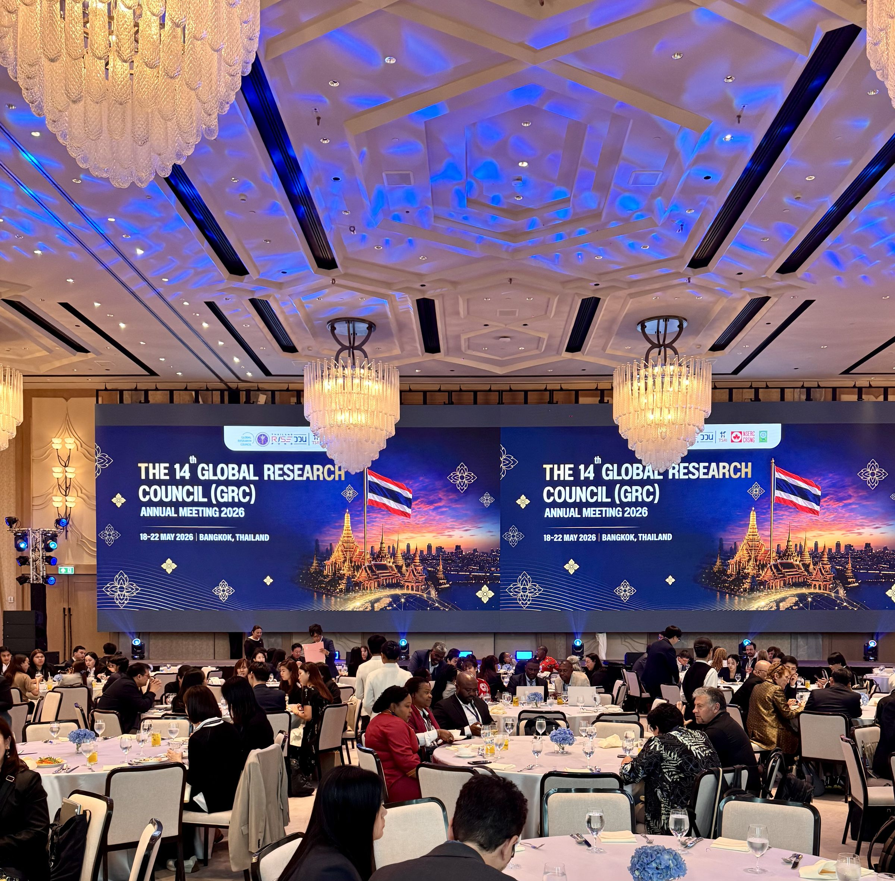
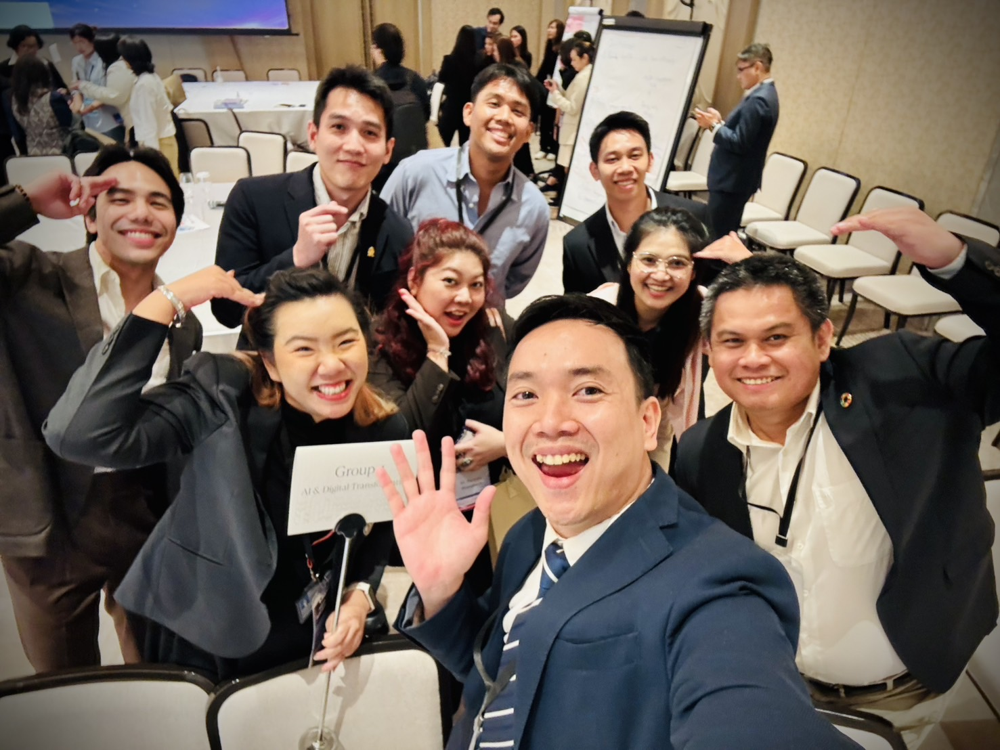

ASEAN Young Scientists Connect 2026 at Dusit Thani Bangkok
ASEAN Young Scientists Connect 2026 at Dusit Thani Bangkok
Abstract
Trans-GMS LLM is a multilingual medical language model initiative designed to address healthcare accessibility challenges across low-resource Southeast Asian languages. Presented at ASEAN Young Scientists Connect 2026, the project explores how region-specific language technologies can support healthcare communication, clinical intelligence, and cross-border collaboration throughout the Greater Mekong Subregion. The framework emphasizes trustworthy AI, multilingual adaptation, and inclusive deployment strategies for environments with limited medical resources and linguistic diversity. The presentation highlighted the importance of culturally grounded AI systems capable of supporting researchers, healthcare professionals, and underserved communities across ASEAN countries.

Field Report from Bangkok
At ASEAN Young Scientists Connect (AYSC) 2026, hosted at Dusit Thani Bangkok, researchers and innovators from across Southeast Asia gathered to discuss the future of artificial intelligence, healthcare technologies, and regional scientific collaboration. Among the featured presentations was Trans-GMS LLM, a multilingual medical AI initiative designed for low-resource healthcare environments across the Greater Mekong Subregion.
The event created a collaborative platform for young scientists, engineers, and researchers from ASEAN countries to exchange ideas on trustworthy AI, multilingual technologies, and inclusive innovation strategies capable of addressing regional healthcare challenges.
Pitching Trans-GMS LLM in Three Minutes
One of the most challenging aspects of the session was translating a technically complex research project into a concise and compelling three-minute scientific pitch.
The presentation introduced Trans-GMS LLM, a multilingual large language model designed to support healthcare communication and medical intelligence across linguistically diverse Southeast Asian regions, including:
- Thailand
- Laos
- Cambodia
- Myanmar
- Vietnam
- Malaysia
- Singapore
- Indonesia
- Philippines
- Brunei
- Timor-Leste
- China (Greater Mekong Subregion contex, Yunnan & Guangxi)
Unlike globally dominant language models trained primarily on high-resource English datasets, Trans-GMS LLM focuses on underserved regional languages where healthcare communication remains difficult due to limited digital infrastructure and scarce annotated medical corpora.
Rethinking Medical AI for Southeast Asia
The project approaches multilingual healthcare AI as a regional accessibility challenge rather than a purely computational problem.
Building effective healthcare AI for Southeast Asia requires more than larger models. It requires culturally grounded language technologies capable of operating reliably across diverse linguistic and resource-constrained environments.
The discussion emphasized several major research directions:
- Developing multilingual medical reasoning capabilities for ASEAN languages
- Improving healthcare accessibility through localized AI systems
- Supporting trustworthy AI deployment in low-resource environments
- Enabling regional collaboration between ASEAN researchers and institutions
By positioning Southeast Asian languages as central design priorities rather than secondary adaptation targets, the project highlights the importance of inclusive AI development for emerging regions.
A Regional Conversation on Trustworthy AI
Beyond the technical presentation, the event reflected the growing momentum of scientific collaboration within ASEAN.
Researchers exchanged perspectives on:
- Cross-border AI research collaboration
- Responsible deployment of medical AI systems
- Data accessibility and multilingual representation
- Sustainable AI ecosystems for developing economies
- The future of regional language technologies
The atmosphere emphasized a shared vision of building AI systems grounded in local realities while remaining globally relevant.
Why This Matters
Large language models are rapidly transforming healthcare and scientific research, yet many low-resource communities remain excluded due to language barriers and limited infrastructure.
Projects such as Trans-GMS LLM aim to reduce these gaps by exploring how multilingual foundation models can support:
- Healthcare communication
- Clinical knowledge access
- Medical education
- Decision-support systems
- Regional healthcare collaboration within ASEAN
The initiative demonstrates how trustworthy and culturally aware AI systems can contribute to more equitable access to healthcare technologies across Southeast Asia.
Looking Forward
ASEAN Young Scientists Connect 2026 demonstrated that the future of AI in Southeast Asia will depend not only on technological innovation, but also on regional collaboration, interdisciplinary thinking, and inclusive research ecosystems.
Presenting Trans-GMS LLM at Dusit Thani Bangkok was more than a technical presentation — it was an opportunity to contribute to a broader regional conversation about the future of trustworthy, multilingual, and accessible AI for ASEAN communities.


I would like to sincerely thank my new friends in Group 4 at ASEAN Young Scientists Connect 2026 for the inspiring discussions, collaborative spirit, and thoughtful exchange of ideas throughout the event. Working together on regional AI and healthcare challenges made the experience both intellectually enriching and genuinely memorable. I truly appreciate the openness, creativity, and energy everyone brought to the group, which made our short time together feel impactful and meaningful. I am grateful to have shared this journey with such talented and forward-thinking peers across the region.

Overall, ASEAN Young Scientists Connect 2026 at Dusit Thani Bangkok was an inspiring and impactful experience that brought together diverse minds across Southeast Asia to exchange ideas on science, technology, and regional innovation. The event created a rare and valuable space for meaningful dialogue on how AI and emerging technologies can address real-world challenges, particularly in healthcare and low-resource settings. I am sincerely grateful to the organizers for their excellent coordination and for fostering such a vibrant and collaborative environment. It was an honor to be part of this gathering, and I leave with deep appreciation for the connections made, the insights shared, and the shared vision of advancing science for the benefit of the region.
Teerapong Panboonyuen
My research focuses on leveraging advanced machine intelligence techniques, specifically computer vision, to enhance semantic understanding, learning representations, visual recognition, and geospatial data interpretation.